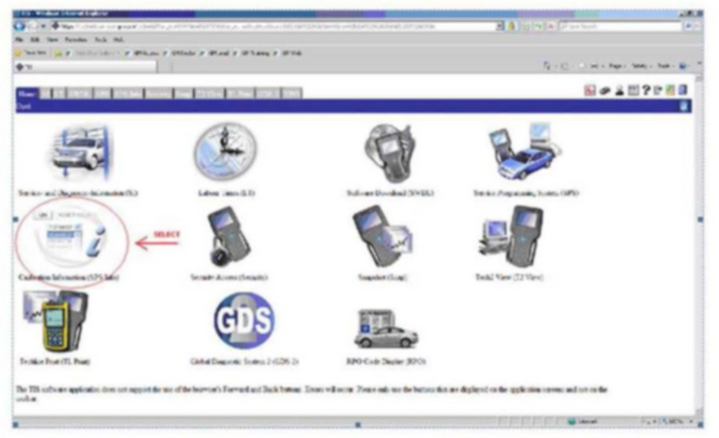
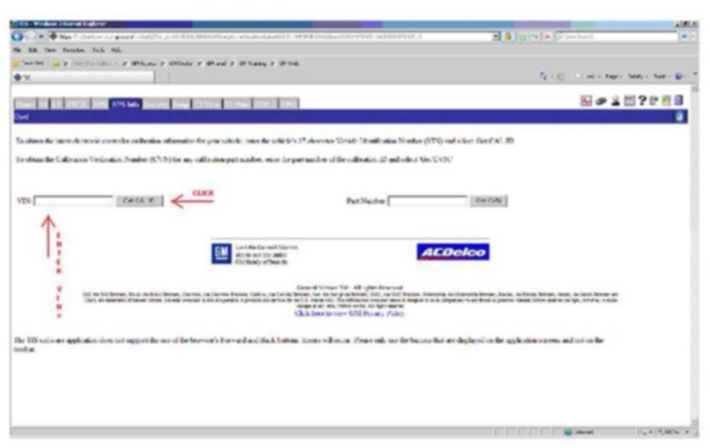
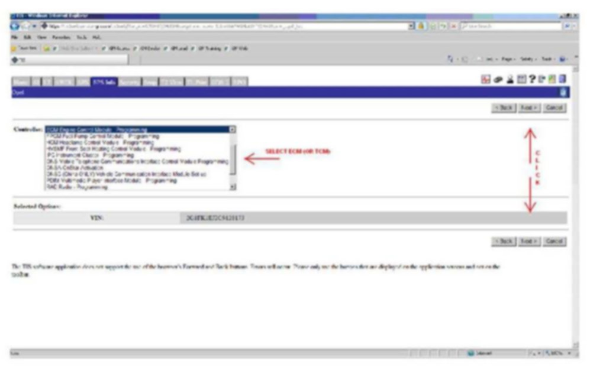
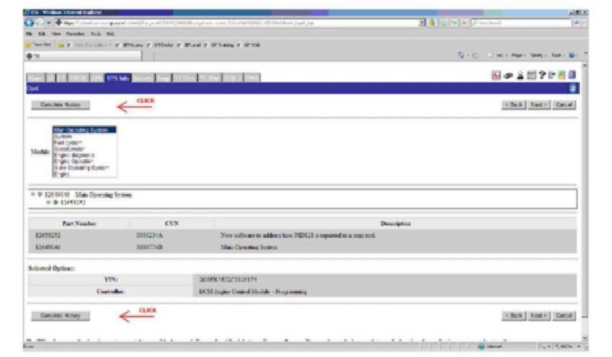
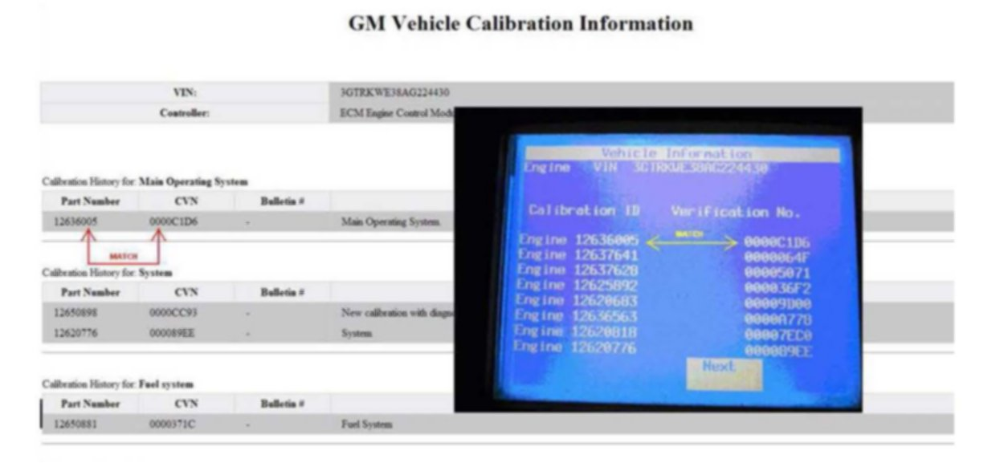
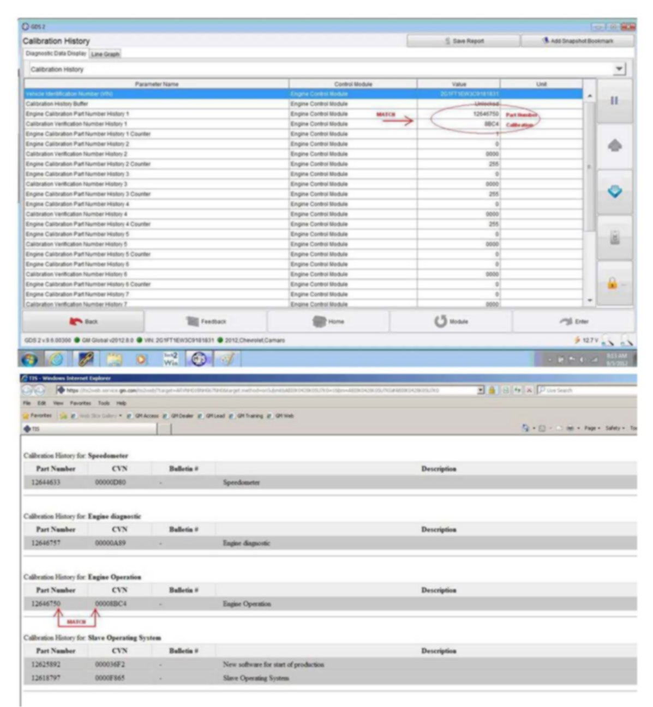

Section 8
8. Calibration Verification Procedure - For Service Agents NOT REQUIRED to Call PQC for Powertrain/Drivetrain Assembly Replacement Authorization - Using the Tech 2(R) or GDS 2
1. Go to: TIS2WEB Home Page.

2. Select: Calibration Information (SPS Info).

3. Enter the: VIN.
4. Select: Get Cal ID.
5. Select: ECM Engine Control Module - Programming from the Controller dropdown menu and select: Next.

6. Select: Complete History at the top left or bottom left of the page to access the GM Vehicle Calibration Information screen, which displays all of the GM Approved Calibrations and CVNs (Verification Numbers).
^ If the vehicle being serviced requires using the Tech 2(R), Go to subsection: 8. A. Calibration Verification Procedure - Using the Tech 2(R)
^ If the vehicle being serviced requires using GDS 2, Go to subsection: 8. B. Calibration Verification Procedure - Using GDS 2
8. A. Calibration Verification Procedure - Using the Tech 2

Compare each: Calibration ID Part Number and Verification No. (Number/CVN) from your Tech 2 photo to the corresponding Calibration ID Part Number and Verification No. (Number/CVN) listed in the TIS2WEB GM Vehicle Calibration Information screen of TIS2WEB to ensure that they are ALL an EXACT MATCH.
^ If ANY of the Calibration ID Part Number and Verification No. (Number/CVN) when COMPARED to the Calibration ID Part Number and Verification No. (Number/CVN) listed in the TIS2WEB GM Vehicle Calibration Information screen, DO NOT MATCH, then non-GM calibrations may be present and you should follow the procedure in Section: 10. Procedure for All Service Agents for E-mailing .jpg or JPEG Files to the Calibration Group at - TACCVN@gmexpert.com in order to e-mail your findings to the Calibration Group, who will then document your information with the appropriate Brand Quality Manager (BQM) in the Brand Quality Team.
8. B. Calibration Verification Procedure - Using GDS 2

Compare each: Engine Calibration Part Number History parameter and Calibration Verification Number History parameter from the GDS 2 Calibration History screen to the Calibration Part Number and Calibration Verification Number (CVN) listed in the GM Vehicle Calibration Information screen of TIS2WEB to ensure that they are ALL an EXACT MATCH.
^ If ANY Engine Calibration Part Number History parameter and Calibration Verification Number History parameter when COMPARED to the Engine Calibration Part Number History parameter and Calibration Verification Number History listed in the TIS2WEB GM Vehicle Calibration Information screen, DO NOT MATCH, then non-GM calibrations may be present and you should follow the procedure in Section: 10. procedure for All Service Agents for E-mailing .jpg or JPEG Files to the Calibration Group at - TACCVN@gmexpert.com in order to e-mail your findings to the Calibration Group, who will then document your information with the appropriate Brand Quality Manager (BQM) in the Brand Quality Team.